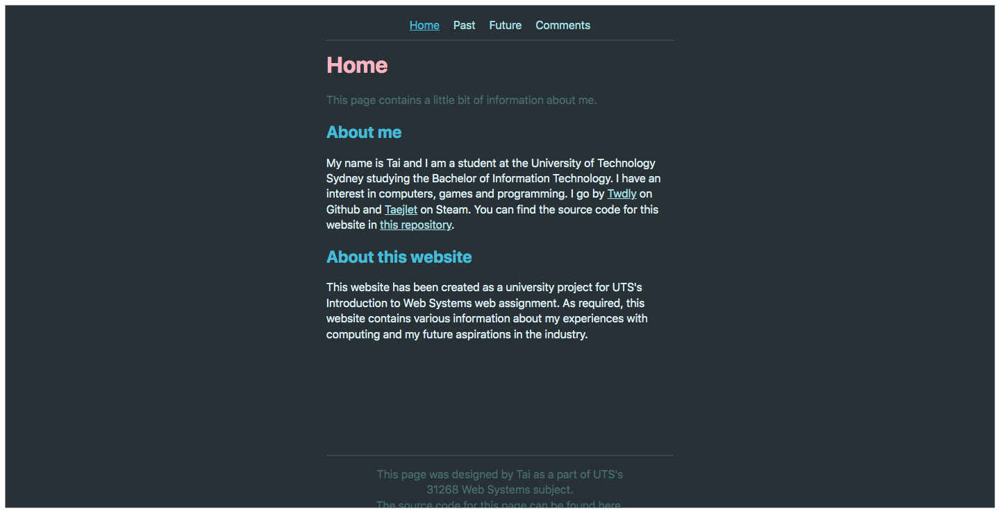
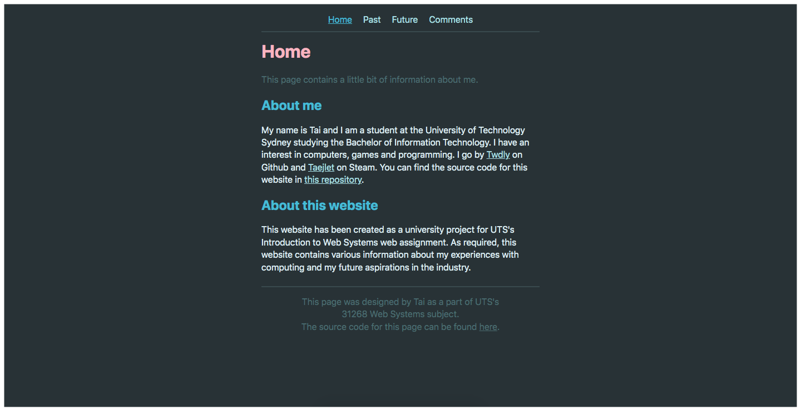
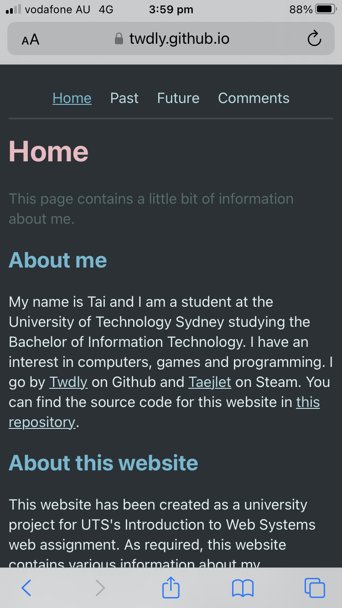

Comments
This page contains comments and developer commentary on the creation of this website.
Design Reflection
When I was designing this website, I intended to create a clean, modern website which is consistent across pages using a minimalist design allowing for the content to be comfortable and easy to read. The ways in which this influenced the design of the website are outlined underneath the aesthetics subheading while the ways in which this was actually achieved are outlined under the technical aspects subheading. I found that designing a simple, clean website inherently made for an accessible websites but there are other extra features I have utilised to make the website accessible which are all described under the accessibility subheading. I personally think that I achieved my goal of creating a modern, consistent website well and, as a result, I am personally very satisfied with the end result and I am hopeful that you agree.
If I were to continue improving this website into the future and I were allowed to use JavaScript, the first thing I would attempt to add would be a light mode. Although I personally believe that dark colour schemes like the one present on this website look cleaner and are generally considered better for readability, there are use cases in which people may prefer light modes such as when attempting to view content outside in the sun or in other light environments. Implementing this would also further improve the accessibility of the website as individuals with a condition called astigmatism sometimes struggle to read content when designed to only support a dark mode as this leads to excessive blurriness in their vision.
Technical Aspects
Each page on this website consists of three main sections that form each page; the navigation bar, the body/article and the footer. To ensure that my aforementioned goal of consistency was achieved in this regard, the navigation bar and footer are consistent between pages. Each of these sections are separated by a horizontal line to create a visual distinction between the sections while also just looking good (in my opinion at least).
One issue I had with this design was that the footer would be placed directly after the text in the article for each page which, on most pages, was not an issue with the only exception on devices I tested with being the home page. After testing many potential solutions which all had flaws such as straight up not working or resulting in the footer overlapping with other text, the solution I found was to create a flexbox which was given a minimum size of at least 100vh which is CSS-speak for the whole screen. This resulted in the footer being placed at either the very bottom of the page if the content is less than a whole screen or at the bottom of the article if it is long enough. This is displayed in the two following images which have borders added to demonstrate where the edge of the screen is.
Website with the flexbox enabled placing the footer at the bottom.
Website without the flexbox enabled placing the footer below the text.
Another major technical design aspect for this website is how it responds to differently sized viewports allowing for it to be just as functional on a laptop or desktop with a large screen as it is on a tiny mobile phone. This was achieved by first allowing the web browser to modify the scale of the content on the website through placing the line <meta name="viewport" content="width=device-width, initial-scale=1.0"> at the top of each HTML file. With just this line, I found that the margins were still far too large on mobile devices to be an acceptable solution by itself. This was solved through the use of the min() function inside my CSS for the horizontal line, images and text. Specifically, the maximum width of all these elements are either 95% of the viewport's width or 500px depending on which is smaller. The end result is a responsive website that is usable on both small and large screens. 
How this website looks when viewed on a mobile device. If you are already on a phone, all other screenshots of this website use the desktop UI.
Aesthetics
The colour scheme for this website was entirely based on the colour scheme called "Noel" for Visual Studio Code which was made for me by a friend of mine who goes by lunacookies on Github. As a connoisseur of colour schemes, she designed Noel to be a low contrast colour scheme with visually appealing colours based on the GMK keycap set with the same name. The fact that the colours were designed with comfortable reading in mind (and the fact that they were chosen specifically for me) made this colour scheme an easy choice for the website.

A screenshot of the HTML for this website's home page using the aforementioned Noel colour scheme.
One of the more potentially confusing choices (that, ideally, you didn't even realise) is the choice to have the scroll bar always display on browsers that don't hide it like Safari even when the page is not long enough to require a scroll bar. This choice was made because, at least on Chrome, the scroll bar actually changes the placement of the content on the screen very slightly. As one of the goals when creating this website was consistency, having content shifted across on certain pages made for inconsistent alignment between pages which manifested itself as content appearing to shift around when navigating the website.


Two screenshots of this website. The top has the scroll bar while the bottom does not. Take note that the added white lines do not line up. The top one is consistent with the pages that have more content while the bottom one is not.
An important part of making the content on this website as easy to read as possible was the use of whitespace (or greyspace in my case?) in both the margins and between each element. Although many may consider the margins particularly wide compared to what they may be used to, I personally find that margins of this size result in lines containing just the right number of characters for easy reading without feeling overwhelmed by the length of each line. Thankfully, typographers agree that the ideal line length is within the range of 50-75 characters which my website perfectly falls within. In addition to margins, whitespace is placed between all elements including paragraphs, images and headers. Unlike the margins, there isn't any typographical reason behind the amount of whitespace between elements except I just think it looks right. The amount of padding between elements was chosen by settling on a value that allows for a comfortable amount of space between elements while not being a ridiculous distance apart.
Accessibility
In order to ensure that this website is as accessible as possible, I decided to structure the website in a manner that facilitated easy keyboard navigation and support for screen readers. When creating this website, as I have mentioned previously, consistency across all pages was a core goal when designing and writing content. A part of making the website consistent involved designing a navigation bar that is always in the same position on the page with the same contents in the same order. Because this navigation bar is always at the top of the page, the entire website is quick and easy to navigate between pages using just the tab and enter keys.
To support users with impaired vision, I ensured that the website is compatible with screen readers. This involved using a consistent heading structure throughout the website which allows blind users to know what each section is about along with using the alt text feature for any images. This means that, when combined with the image captions that are visible below each image, users who are blind should be able to understand the content and significance of any images placed within my website.
Although not specifically a part of making the website usable for users with disabilities, as explained in the technical aspects section above, this website responsively resizes content depending on the size of the screen being used to view it. This means that anyone is able to use the website regardless of device allowing it to be vastly more accessible even if users do not have access to a specific type of device whether that be a phone or a laptop.